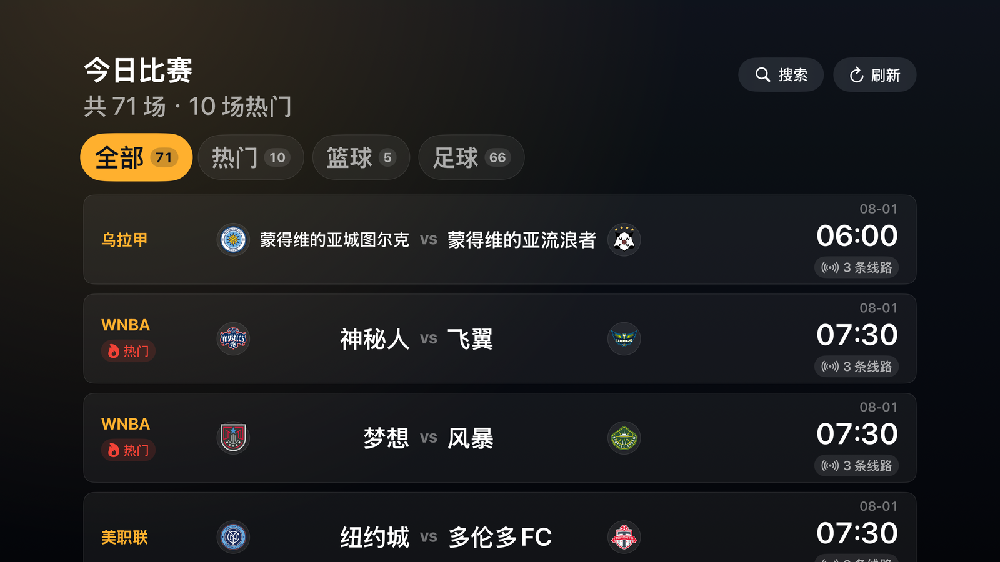
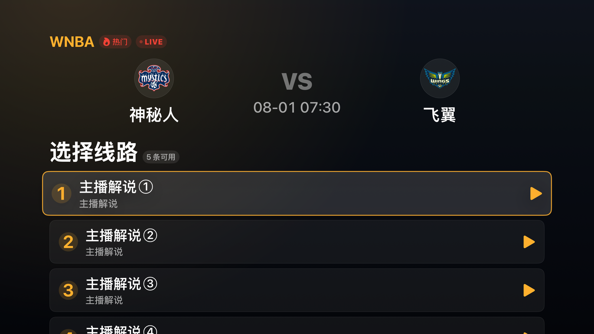

界面



首版能力
| 能力 | 实现 |
|---|---|
| 比赛列表 | 读取目标站点公开首页与动态列表脚本 |
| 浏览 | 第 1 步选择比赛，第 2 步读取并选择具体频道，例如“中文高清 Q ⑤” |
| 播放 | 解析公开 iframe 与加密播放器链路，发现 HLS 后交给 AVPlayer |
| 平台 | tvOS 17+；最终验收设备为实体 Apple TV |
生成、测试与构建
xcodegen generate
xcodebuild -project JRKANApple.xcodeproj -scheme JRKANTV \
-destination 'platform=tvOS Simulator,name=Apple TV 4K (3rd generation)' test
xcodebuild -project JRKANApple.xcodeproj -scheme JRKANTV \
-sdk appletvos -configuration Release build CODE_SIGNING_ALLOWED=NO边界
当前为了兼容第三方 HTTP 页面启用了宽松网络策略。正式发布前应由自有 HTTPS 后端完成解析，并收紧 App Transport Security。